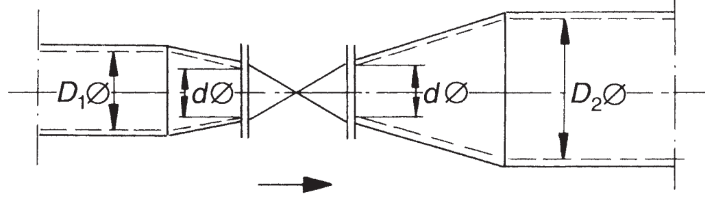

Considerations for Evaluating Control Valve Cavitation
Flow with flow restriction and with fittings
Essential features of the \(K_v\) value calculation
In many applications, the flow through the control valve is determined by reducers or other accessories (orifice plates) attached to the control valve. When cavitation occurs in a valve, the flow is further limited by the evaporation of the liquid in the valve. Therefore, to determine the flow through the control valve, the following should be analyzed:
- Flow without flow restriction, turbulent flow and no cavitation.
- Flow with flow restriction but without fittings
- Flow with flow restriction and with fittings
In this blog, only points 3. “Flow with flow restriction and fittings will be considered in the following blog”.
Flow with flow restriction cavitation and with fittings
Flow coefficients for a given valve type are determined under standard installation conditions. Therefore, the coefficient \(F_P\) must be considered in realistic installation conditions. The coefficient \(F_P\) considers, for example, a reducer, an expander, or an orifice plate, elements that affect the value of \(K_v\) of a control valve. A calculation can only be carried out for pressure and velocity changes caused by reducers and expanders directly connected to the valve. Other effects, such as the ones caused by a change in velocity profile at the valve inlet due to reducers or other fittings like a short radius bend close to the valve, can only be evaluated by specific tests.
\[ q = K_v \cdot F_R \cdot F_p \cdot \sqrt{\frac{\Delta P}{(\rho_{1}/\rho_{0})}} \]
\[ q_{max(LP)} = K_v \cdot F_{LP} \cdot F_R \cdot \sqrt{\frac{(P_1-F_F \cdot P_v)}{(\rho_{1}/\rho_{0})}} \]
The maximum allowable differential pressure for the calculation of control valves with fittings can be calculated as follows:
\[ \Delta{P}_{max(LP)}= \left( \frac{F_{LP}}{F_P}\right)^2 \cdot (P_1-F_F \cdot p_v) \] - \(Q\) is the flow; Unit: \(m^3/s\) - \(F_L\) Liquid pressure recovery factor of a control valve without attached fittings. The value \(F_L\) provided by the manufacturer refers to the value when the control valve is fully open. Unit: Dimensionless - \(F_R\) Reynolds number factor; Unit: Dimensionless. For turbulent flow, \(F_R = 1\) - \(F_F\) Liquid critical pressure ratio factor; Unit: Dimensionless - \(P_v\) Absolute vapor pressure of the liquid at inlet temperature ; Unit: bar - \(F_P\) Piping geometry factor : Dimensionless - \(F_{LP}\) Combined liquid pressure recovery factor : Dimensionless - \(\rho_{1}/\rho_{0}\) Relative density (\(\rho_{1}/\rho_{0} = 1.0\) for water at \(15°C\)); Unit: Dimensionless - \(\Delta P\) Differential pressure between upstream and downstream pressure taps; Unit: bar
Piping geometry factor \(F_P\)
The piping geometry factor \(F_P\) must account for fittings attached upstream and downstream to a control valve body. The \(F_P\) factor is the flow rate ratio through a control valve installed with attached fittings to the flow rate that would result if the control valve was installed without attached fittings and tested under identical conditions [Wagner, Walter. Regel- und Sicherheitsarmaturen. 2008].
\[ F_P = \frac{1}{\sqrt{1 + \frac{\sum{\zeta} \; \cdot \left(\frac{K_v}{d^2}\right)}{0.0016}}} \] In this equation, the factor \(\sum{\zeta}\) is the algebraic sum of all the effective resistance coefficients of all the accessories connected to the control valve.
\[ \sum{\zeta} = (\zeta_1 + \zeta_2) + (\zeta_{B_1}-\zeta_{B_2}) \]
Where:
- \(\zeta_1\) Resistance coefficient of the valve in the inlet
- \(\zeta_2\) Resistance coefficient of the valve in the outlet
- \(\zeta_{B_1}\) Bernoulli pressure number in the valve inlet
- \(\zeta_{B_2}\) Bernoulli pressure number in the valve outlet

If the inlet and outlet fittings’ diameters are the same, \(\zeta_{B_1}\) and \(\zeta_{B_2}\), become equal and fall out of the equation. In cases where the pipe diameters in front of and behind the control valve are different, the \(\zeta_{B_1}\) and \(\zeta_{B_2}\) are calculated as follows:
\[ \zeta_{B_1} = 1- \left(\frac{d}{D_1}\right)^2 \; ; \; \zeta_{B_2} = 1- \left(\frac{d}{D_2}\right)^4 \] If the inlet and outlet ports are short, commercially available concentric reducers and diffusers, then the coefficients \(\zeta_1\) and \(\zeta_2\) can be calculated roughly as follows:
\[ \zeta_1 = (1/2) \cdot \left(1- \left(\frac{d}{D_1}\right)^2\right)^2 \\ \\ \zeta_2 = \left(1- \left(\frac{d}{D_2}\right)^2\right)^2 \]
Then for inlet reduction and outlet expansion with the same pipe size \((D_1=D_2=D)\):
\[ \sum{\zeta} = 1.5 \cdot \left(1- \left(\frac{d}{D}\right)^2\right)^2 \]
Combined liquid pressure recovery factor \(F_{LP}\)
When a valve is installed with reducers or other attached fittings, the valve-fitting combination’s liquid pressure recovery is not the same as that for the valve alone. For calculations involving choked flow, it is convenient to treat the piping geometry factor \(F_p\) and the \(F_L\) factor for the valve-fitting combination as a single factor. The factor \(F_{LP}\) is determined in the same way as \(F_L\), with laboratory test results.
\[ F_{LP} = \frac{F_L}{\sqrt{1+\frac{F_L^2}{0.0016}\cdot \sum{\zeta_1}\cdot \left( \frac{K_v}{d^2} \right)^2}} \] Here \(\sum{\zeta_1} = \zeta_1 + \zeta_{B_1}\), and \(\zeta_{B_1}\) is the Bernoulli pressure factor for the fitting upstream of the valve, determined between the upstream pressure test point in the pipeline and the inlet of the control valve.
Liquid critical pressure ratio factor \(F_F\)
\(F_F\) is the liquid critical pressure ratio factor. This factor is the ratio of the apparent Vena-Contracta pressure at choked flow conditions to the liquid’s vapor pressure at inlet temperature. At vapor pressures near zero, this factor is 0.96. Values of \(F_F\) may be determined approximated from the following equation:
\[ F_F = 0.96-0.28 \cdot \sqrt{P_v/P_c} \] Where: \(p_c\) is the thermodynamic critical pressure. For water, this value is \(p_c = 221.2\) bar and \(p_v\) vapor pressure of the liquid.
What can you do with the information from Evaluating Control Valve Cavitation?
Let’s start by comparing the cavitation levels of different types of control valves and other brands of plunger control valves. But in the next blog. :-)
References
- Wagner, Walter. Regel- und Sicherheitsarmaturen. 1. Aufl. dieser Ausg, Vogel, 2008.
- Handbook for Control Valve Sizing - Parcol. TECHNICAL BULLETIN 1-ITECHNICAL BULLETIN 1-I.
- Tullis, J. P. Cavitation Guide for Control Valves. NUREG/CR-6031, Nuclear Regulatory Commission, Washington, DC (United States). Div. of Engineering; Tullis Engineering Consultants, Logan, UT (United States), 1 Apr. 1993, https://doi.org/10.2172/10155405.
- Parabolic Curve | Surveying and Transportation Engineering Review at MATHalino. https://mathalino.com/reviewer/surveying-and-transportation-engineering/parabolic-curve. Accessed 25 Oct. 2022.
- ANSI/ISA, editor. ANSI/ISA-75.01.01-2007, Flow Equations for Sizing Control Valves. ISA, 2007.
- British Standard, editor. BS EN 60534-1:2005. Control Valve Terminology and General Considerations. 2005.
- ANSI/ISA, editor. ANSI/ISA-RP75.21, Process Data Presentation for Control Valves. Instrument Society of America, 1996.
- ANSI/ISA, editor. ANSI/ISA–RP75.23–1995, Considerations for Evaluating Control Valve Cavitation. Instrument Society of America, 1995.
- American National Standards Institute, and Instrument Society of America. Flow Equations for Sizing Control Valves: Standard. 1985.
- ANSI/ISA. ANSI/ISA-75.11-1985 (R1996) , Inherent Flow Characteristic and Rangeability of Control Valves. 1985.